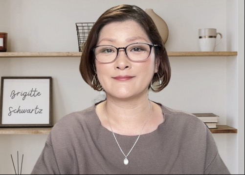

完全マンツーマン（1対1）・秘密厳守／参加費完全無料・60分で人生が変わる第一歩
こころと思考を
整えるだけで、
人生は変えられる
思考の癖を知るだけで、もう迷わない。
講師とあなただけの1対1で、
人生を根本から変える60分間の
オンライン勉強会
＼ 毎月先着10名様限定・参加費無料 ／
60分無料勉強会に申し込む
こんなお悩み
ありませんか？
我慢しているんだろう…

なぜか空回りしてしまう…

- 夜になると不安で眠れない日がある
- 周りに理解してもらえず、孤独を感じている
- いつも人の顔色を伺ってしまい、疲れてしまう
- 自分に自信が持てず、何をしても楽しめない
- 変わりたいと思っているのに、何から始めればいいかわからない
勉強会講師・YUKIの想い

「こころと思考を整える」ことで、私自身の人生が変わりました。
- 過去の苦悩
- 25歳で自営業へ嫁ぐ。「いい妻・いい嫁」であろうとしすぎて、妊娠中毒症や緊急出産、産めない体への葛藤を経験。
- どん底の経験
- 夫からの16年間のモラハラや離婚を経験。社会復帰後も頑張りすぎて空回りし、人間関係のトラブルが続く。
- 転機
- 心理学・自己啓発との出会い、「生きづらさの原因は自分の中（思考の癖）にある」と気づき、克服。
- この勉強会で伝えたいこと
- 過去の私と同じように苦しんでいるあなたへ。こころと思考の仕組みを知るだけで、人生は驚くほど変わります。その確信をこの60分に込めました。
この勉強会で
得られること
こころと思考の
仕組みを理解する
なぜ感情がコントロールできないのか。なぜ同じパターンを繰り返してしまうのか。その根本的なメカニズムをわかりやすく解説します。
今日から使える
実践メソッド
知識で終わらせない。勉強会後すぐに日常で実践できる、シンプルで続けやすいメソッドをご紹介します。
こころと思考が整うと、
毎日がみるみる変わっていきます。
セミナーで体験する
2つのワークプログラム
この60分は、ただ話を「聞くだけ」では終わりません。
あなた自身の人生に向き合う実践ワーク。
紙とペンをご用意いただき、
一緒に書き出しながら進めます。
人生の輪（ライフホイール）
〜 今の自分の「現在地」を知る 〜
健康・お金・仕事・人間関係・時間・住環境・こころ・感情――人生を8つの分野で点数化し、自分の現在地を一枚の図で「見える化」します。さらに「1年後・3年後・5年後の自分」、そして「もし余命があと1ヶ月だったら？」という問いから、あなたが本当に望む未来がはっきりと浮かび上がります。
- 自分の現在地を客観的に知ることができる
- このまま変わらなかった場合の未来に気づける
- 本当に大切にしたいことが見えてくる
心に「安全基地」を作る
〜 何があっても立ち直れる土台づくり 〜
不安や生きづらさに振り回されてしまうのは、心の中に“安心して戻れる場所”がないから。コンフォートゾーンの仕組み（安全 → 恐怖 → 学習 → 成長ゾーン）を学びながら、自分の「好きなこと・心地よいこと」を書き出し、つらい時でも素早く立ち直れるあなただけの「心の安全基地」を作ります。
- 感情に振り回されない心の土台ができる
- 人の顔色ではなく「自分軸」を取り戻せる
- 新しい一歩を踏み出す勇気が湧いてくる
“頭で理解する”だけでなく、
“こころで実感する”60分へ。
勉強会参加者の声
人生の輪で自分を見つめ直したら、気持ちがすっと楽になりました
毎日に追われ、自分が今どこに立っているのかも分からないまま、漠然とした不安だけを抱えていました。
人生の輪で自分を振り返ると、満たされている部分にもちゃんと気づけました。「私、これで大丈夫なんだ」と思えて、心がふっと軽くなりました。
人生の輪で振り返るうちに、自然と気づきが生まれました
家族のことや将来のこと、いろいろなことが頭の中でこんがらがって、何から考えればいいのか分からなくなっていました。
人生の輪で一つひとつ書き出して振り返るうちに、本当に大切にしたいものが見えてきました。気持ちが整理されて、肩の力がすっと抜けたんです。
これからの人生が楽しみになりました
子育てがひと段落して虚無感に襲われ、「人生ってなんだったんだろう」と毎日悩んでいました。
勉強会を受けて「本当にやりたいこと」が見つかりました。第二の人生のスタート地点に立てた気分です。
勉強会への参加方法
お申し込み
下のボタンからGoogleフォームでお申し込み。お名前・ご希望日時をご記入ください。
参加URLをお届け
ご登録のメールに、Zoomの勉強会URLをお送りします。
勉強会当日
Zoom（オンライン）にて、講師と1対1で60分の勉強会。お顔出しなしでもOK！他の参加者はいないので安心です。
✅ 参加費は一切かかりません
✅ 完全マンツーマン（1対1）だから安心
✅ 無理な勧誘は一切いたしません
✅ お話しいただいた内容は秘密厳守。第三者へ口外することは一切ありません
安心して
お話しいただくための約束
この勉強会は、講師とあなたの完全マンツーマン（1対1）。
大勢の前で打ち明ける必要はありません。
だからこそ、これまで誰にも言えなかったお悩みも、安心してお話しいただけます。
お悩みは必ず秘密厳守
お話しいただいた内容は、いかなる場合も第三者へ口外いたしません。ご家族や職場、ご友人に知られる心配は一切なし。安心して本音をお聞かせください。
完全1対1のプライベート空間
他の参加者はいません。講師がひとりひとりと真剣に向き合う、完全マンツーマン。あなたのためだけの、誰にも邪魔されない60分です。
否定も勧誘も一切なし
どんなお悩みも、否定したり責めたりすることは決してありません。無理な勧誘・営業も一切ないので、はじめての方も安心してご参加いただけます。
＊ いただいた個人情報・ご相談内容は、本勉強会の目的以外に使用することは一切ありません。
まずは勉強会に参加してみませんか？
60分無料オンライン勉強会
完全マンツーマン（1対1）・秘密厳守
こころと思考を整えるだけで、人生は変えられる
※Zoom（オンライン）にて行います。お顔出しなしでもOK！
お悩みは秘密厳守でお守りします。
＼ 毎月先着10名様限定・参加費完全無料 ／
60分無料勉強会に申し込むよくあるご質問
※重度の精神障害のある方はご利用いただけません。
勉強会へのお申し込み
こころと思考を整えるだけで、
あなたの人生は必ず変わります。
講師とあなただけの1対1で、
その第一歩を、この60分から
一緒に踏み出しましょう。
※ 参加費は完全無料です。
お悩みは必ず秘密厳守でお守りします。
無理な勧誘は一切いたしません。
＼ 毎月先着10名様限定・参加費完全無料 ／
Googleフォームで申し込む（60分無料勉強会・お問い合わせ）
※クリックするとGoogleフォームへ移動します